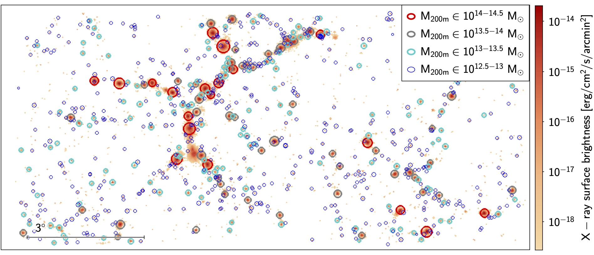

TNG300 X-ray Lightcone
The lightcone is described in detail in Shreeram et al. 2025a: Quantifying Observational Projection Effects with a Simulation-Based Hot CGM Model; particularly see Sec. 2. Here we give some key details and expand on the data structure of the public TNG300-based X-ray lightcone, so called LC-TNGX, which is made available here.
We use the IllustrisTNG cosmological hydrodynamical simulation with the box of side length \(302.6\) Mpc (TNG300). The TNG simulations adopt the Planck cosmological parameters, with the matter density parameter \(\Omega_m = \Omega_{dm} + \Omega_b = 0.3089\), baryonic density parameter \(\Omega_b = 0.0486\), Hubble constant \(H_0 = 100h\) km s\(^{-1}\) Mpc\(^{-1}\) with \(h = 0.6774\), and \(\Omega_\Lambda = 0.6911\). The Friends-of-Friends (FoF) algorithm is applied to the dark matter particles with linking length \(b = 0.2\) to obtain the halos. The subhalos are retrieved with SUBFIND, which detects gravitationally bound substructures that are equivalent to galaxies in observations. SUBFIND also classifies the subhalos into centrals and satellites, where centrals are the most massive substructure within a distinct halo.
Lightcone Construction
LC-TNGX models the hot gas emission in the redshift range \(0.03 \lesssim z \lesssim 0.3\), to mock observations in the local Universe. For this purpose, we box remap all snapshots into a configuration where the longest length of one of the sides is approximately four times the original length (Carlson & White 2010; see also this website). This technique ensures that the new elongated box has a one-to-one remapping, remains volume-preserving, and keeps local structures intact. For a box whose original dimensions are normalized to \((1,1,1)\), the unique solution for the transformed box sides is \((4.1231, 0.7276, 0.3333)\). We remap the coordinates of particles (gas, and dark matter) as well as the halo and subhalo catalogues.
There are 22 snapshots within the observationally motivated redshift range \(0.03 \leq z \leq 0.3\). Therefore, we obtain 22 remapped particle/gas cell cuboids and 22 remapped galaxy catalogue cuboids at redshift \(z < 0.3\). We define the observer's position as being at a corner of the smallest face. The opening angles for the observer are \((\theta_{\rm LC\,obs}, \phi_{\rm LC\,obs}) = (10.16^\circ, 4.64^\circ)\). The area subtended on the sky for a given observer is \(47.28\, \mathrm{deg}^2\). We illustrate the lightcone constructed with the box remap technique in Fig. 1. We also publicly release LightGen, the code used for generating the lightcone in this work.
Galaxy and Halo Catalogues
The distinct halos \( \mathrm{CEN}^{\rm sim}_{\rm halo} \) and subhalos within LC-TNG300 are catalogued with their physical properties and binned in stellar mass and halo mass bins. We have 5,109 centrals and 2,719 satellites of stellar mass in the Milky Way range \(M_\star = 10^{10.5-11} M_\odot\), which is sufficient to statistically model the projection effects in these halos.
The stellar mass used from TNG300 is defined as the mass within twice the stellar half-mass radius. We present quantities relative to both critical and mean densities because \(R_{500c}\) is the radius at which the density of the halo is \(500\times\) the critical density of the Universe and is most commonly used by X-ray astronomers, whereas \(R_{200m}\) is the radius at which the density of the halo is \(200\times\) the mean matter density and represents the halo’s virial radius. The galaxy catalogue is divided into central, \( \mathrm{CEN}^{\rm sim} \), and satellites, \( \mathrm{SAT}^{\rm sim} \), for the concerned stellar mass bins. To construct the \( \mathrm{SAT}^{\rm sim} \) catalogue, we match all the central galaxies with the distinct halos, thereby leaving behind the secondary subhalos classified as satellites.
Figures
Figure 1

Figure 2

Figure 3

Figure 4